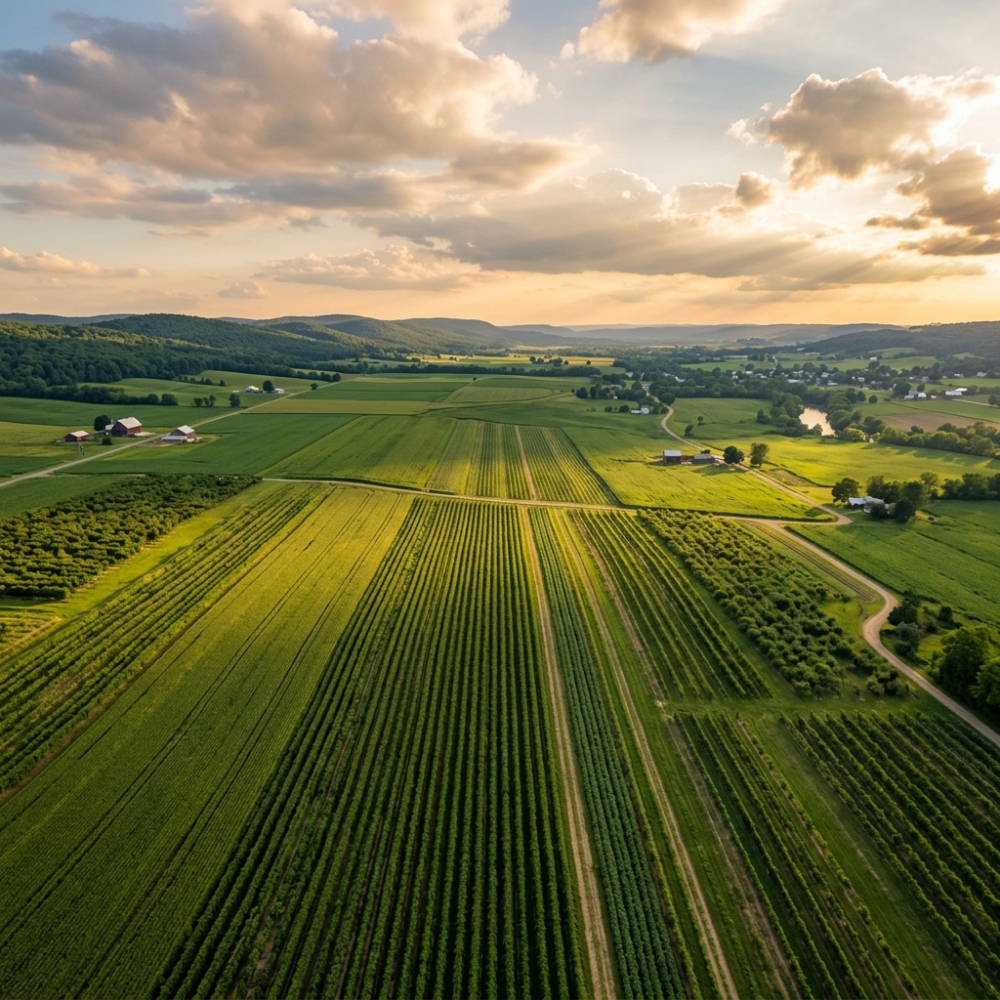
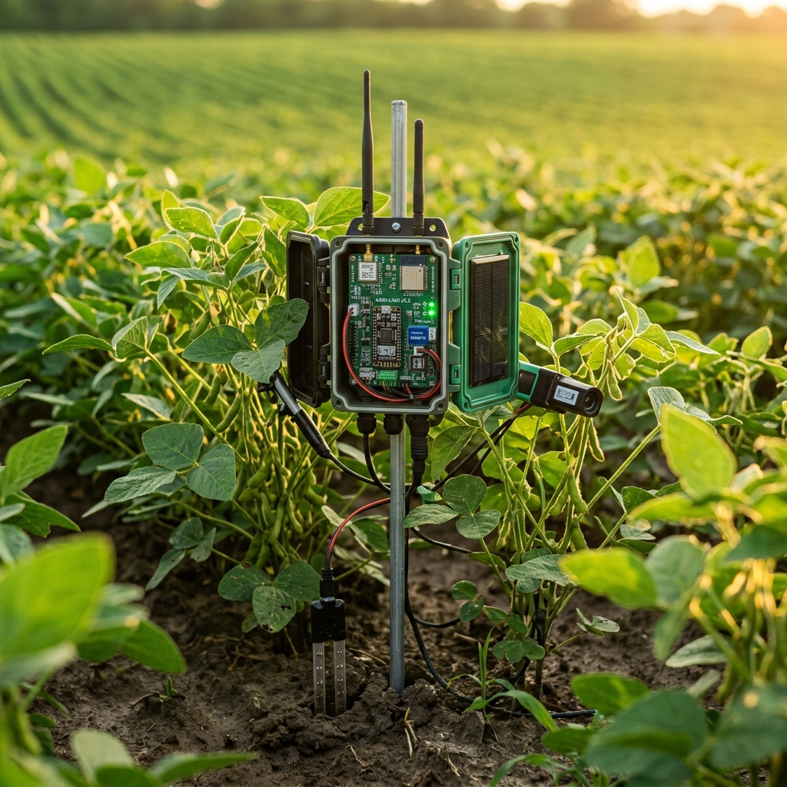
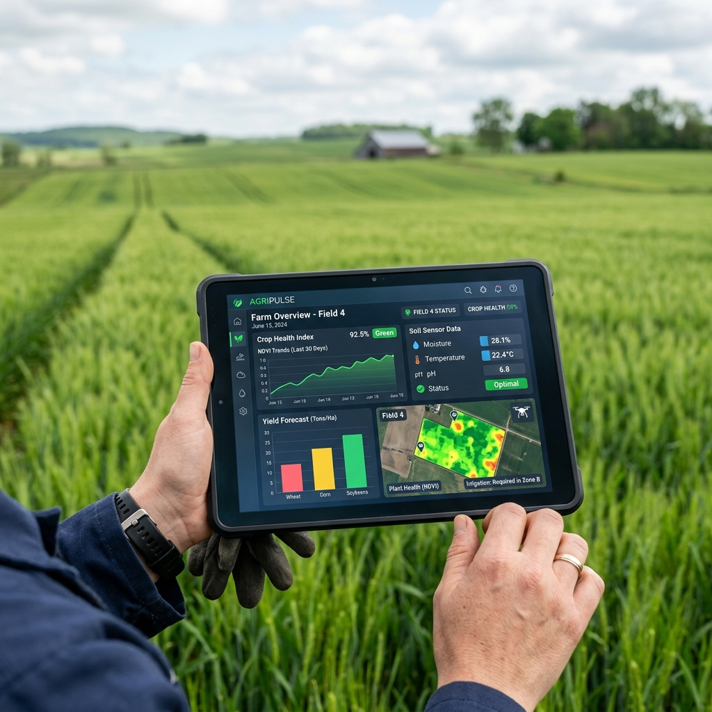

A web-based smart crop monitoring system designed to help farmers track environmental conditions, make data-driven decisions, and embrace sustainable agriculture through IoT technology.
AgroSense IoT aims to bridge the gap between traditional farming and modern technology. By leveraging IoT sensors, real-time data analytics, and intuitive dashboards, we empower farmers to monitor key environmental factors — temperature, humidity, and soil moisture — to optimize crop health and productivity.
Developed as an academic project by Utkarsh Raj, this platform is designed with scalability in mind, ready to integrate with Arduino, ESP, and Raspberry Pi sensors for real-time monitoring in the field.

Comprehensive crop monitoring through smart technology
Real-time tracking of temperature, humidity, and soil moisture using IoT sensors deployed across your farm.
Automated irrigation recommendations based on soil moisture readings. Log and track watering schedules effortlessly.
Visualize trends with interactive charts, access historical data, and receive smart alerts for crop health management.
Smart farming through technology and nature working together
Vast farmlands stretching to the horizon

IoT sensors monitoring crop conditions

Real-time data analytics in the field
Everything you need for smarter farming (hover for details)
Real-time visualization of sensor data with trend charts and alerts for immediate insights.
Our dashboard integrates directly with MQTT/HTTP endpoints from your field sensors to provide minute-by-minute updates.
PHP-based user accounts with session management, ensuring your data stays private.
Your agricultural data is sensitive. We use robust hashing and session tokens to secure every endpoint.
Organize multiple farms and plots, track crop types, sowing dates, and irrigation methods.
Perfect for multi-acre operations, segment your fields logically. Group plots under distinct farms.
Customizable severity-based alerts for critical conditions like low moisture or high temperature.
Don't wait for disaster. Set thresholds for moisture, temperature, and pH automatically triggering warnings.
Aspiring Full Stack Web Developer 🚀
This project was developed as part of a 2nd-year Computer Science Engineering curriculum, combining a passion for web development with a vision for technology-driven agriculture. The system emphasizes responsive design, modular architecture, and scalability for future IoT integration.